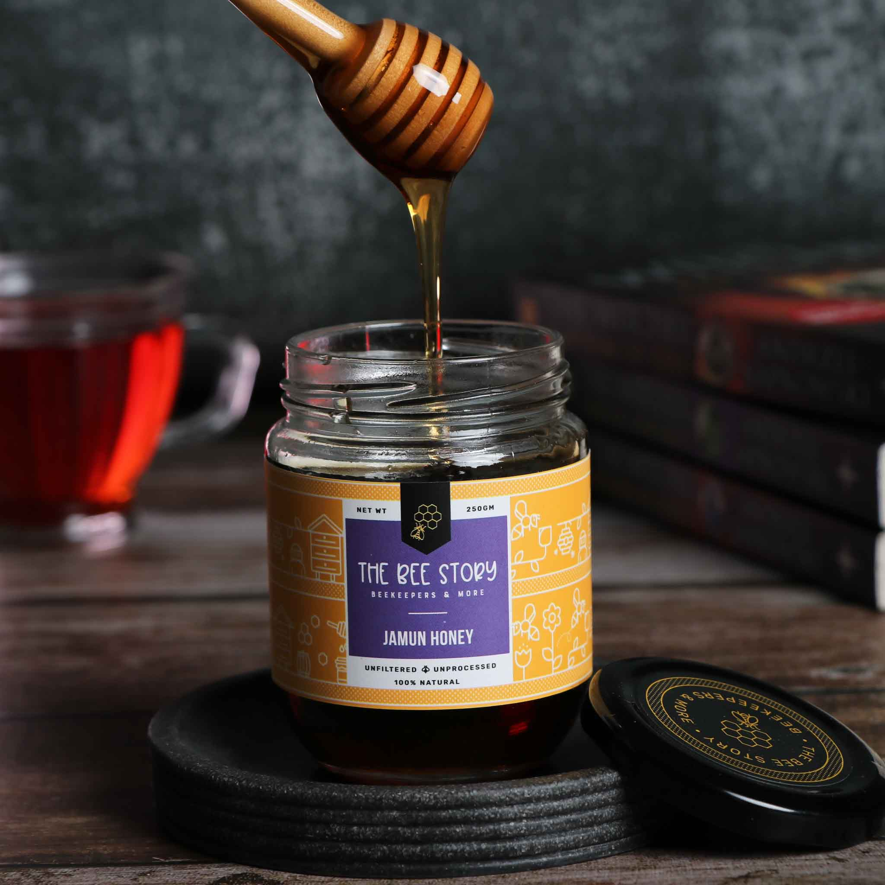

Μέλι Δάσους
Το μέλι που συλλέγεται από τα ελλήνικα δάση, παρασκευασμένο με παραδοσιακές μεθόδους καθώς είναι 100% φυσικό.
LEARN MOREΣας καλωσορίζουμε… Στην ελληνική οικογένεια του μελιού! Στον γλυκό κόσμο της εταιρίας μας, «Melira Honey - Premium Quality Greek Honey», που συνεχίζει μια παράδοση πολλών ετών από το 1979 μέχρι σήμερα. Ελάτε μαζί μας, να γνωρίσετε τα παραδοσιακά προϊόντα στο χώρο του μελιού. Το γνωστό και φημισμένο σε όλους τους Έλληνες, «Μέλι Μάνης». Το μέλι που με τη συσκευασία του και το παραδοσιακό καρό μαντιλάκι έγινε συνώνυμο του Παραδοσιακού, αγνού, Ελληνικού μελιού που εκτός από διακρίσεις όλα αυτά τα χρόνια έχει κερδίσει την εμπιστοσύνη και τις καρδιές των καταναλωτών του. Γνωρίστε επίσης και μυηθείτε σε μια νέα μοναδική καινοτομία για την Ελλάδα αλλά και τον κόσμο ολόκληρο… …Το Μέλι με βιολογικό κρόκο Κοζάνης! Το μέλι με τις εκατοντάδες θρεπτικές ουσίες και ευεργετικές ιδιότητες για τον ανθρώπινο οργανισμό που μαζί με το Μέλι με φυσική μαστίχα Χίου βραβεύτηκαν ως προϊόντα της Χρονιάς και συνεχίζουν να διακρίνονται σε Ελλάδα και Εξωτερικό. Αυτά και άλλα πολλά για το μέλι, τον κόσμο του και τα μυστικά του θα μάθετε και θα ταξιδέψετε μέσα από τις γλυκές σελίδες του site μας και των Προιόντων μας….
Το μέλι που συλλέγεται από τα ελλήνικα δάση, παρασκευασμένο με παραδοσιακές μεθόδους καθώς είναι 100% φυσικό.
LEARN MOREΜοναδικό μέλι που αντικατοπτρίζει την ελληνική παράδοση, με μοναδική γεύση και υγιεινές ιδιότητες.
LEARN MOREΕπιλεγμένο μέλι με έμφαση στην ποιότητα και την παραδοσιακή παραγωγή.
LEARN MOREΤο μέλι που έχει τη φυσική δύναμη του θυμαριού και μεταφέρει την αυθεντική γεύση της ελληνικής φύσης.
LEARN MORE
Follow Us